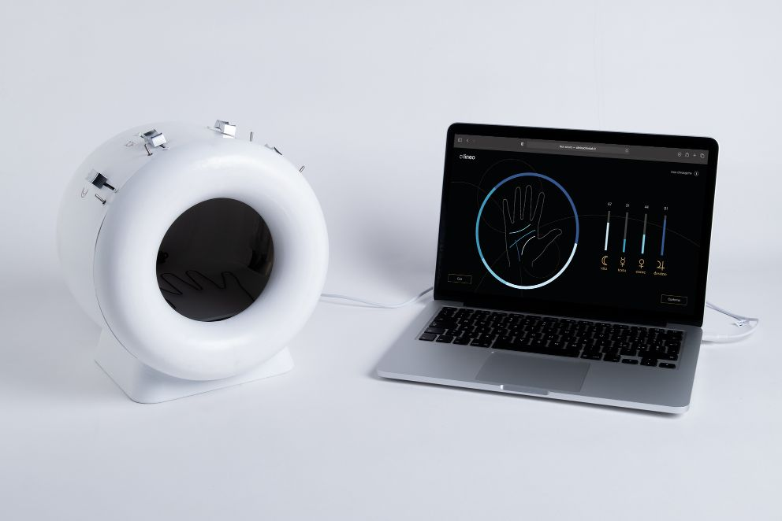
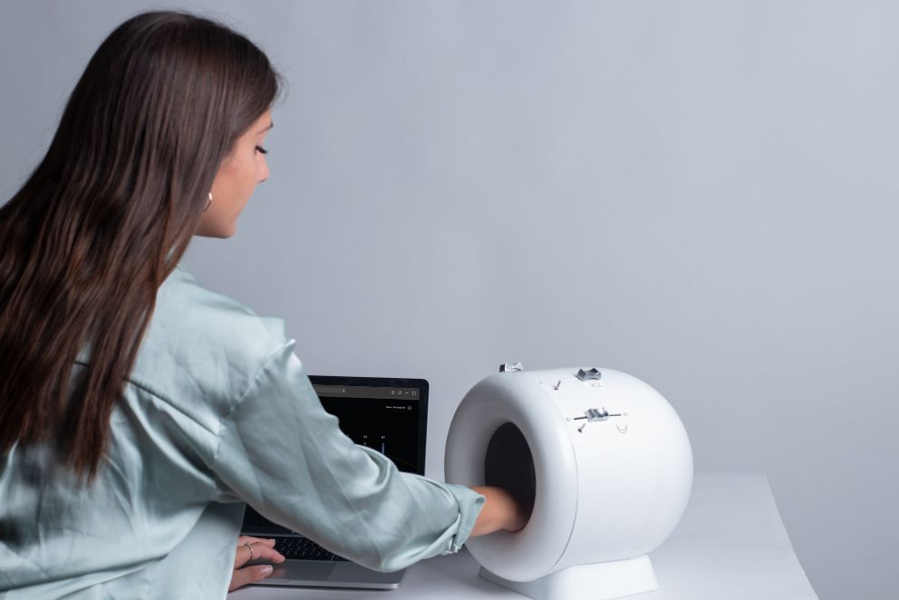
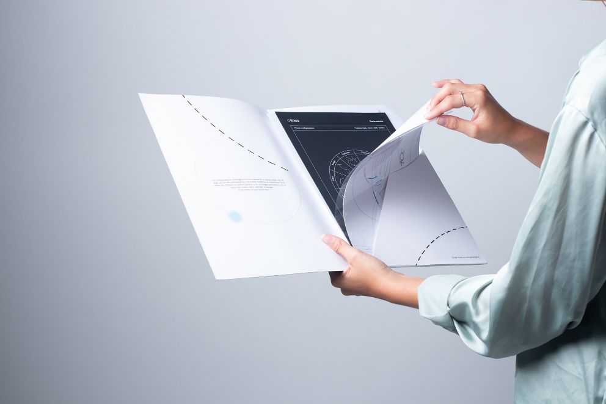
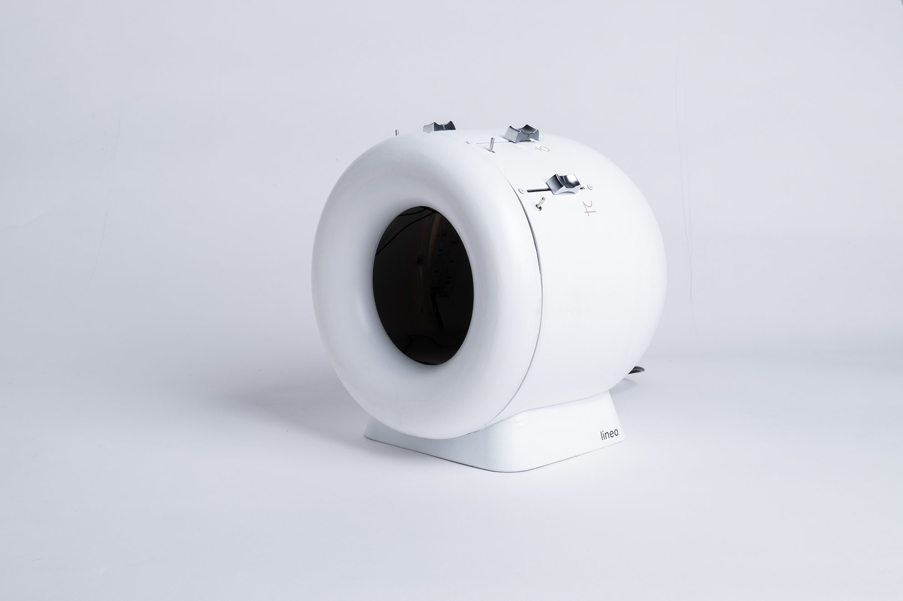
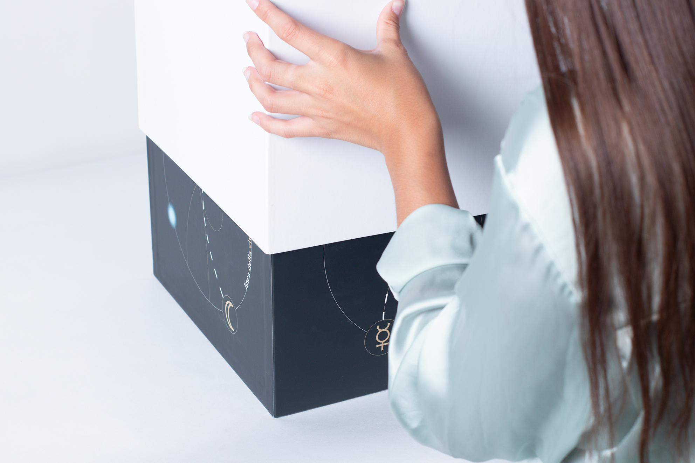
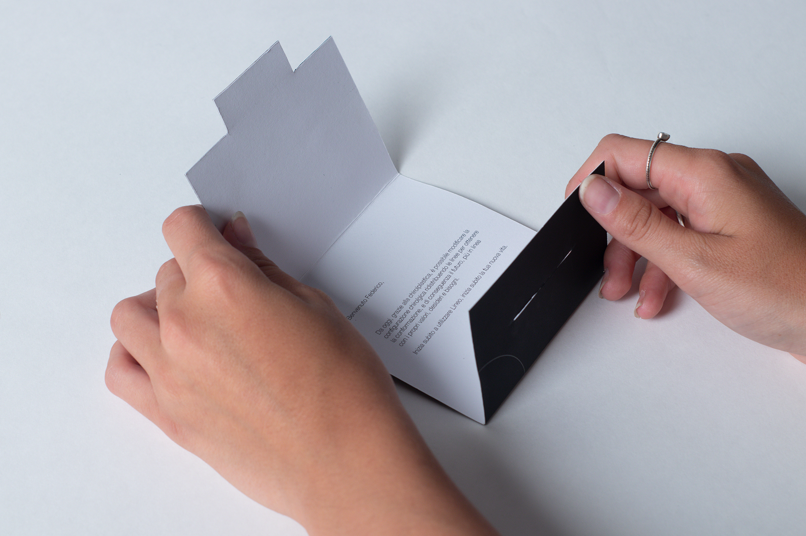
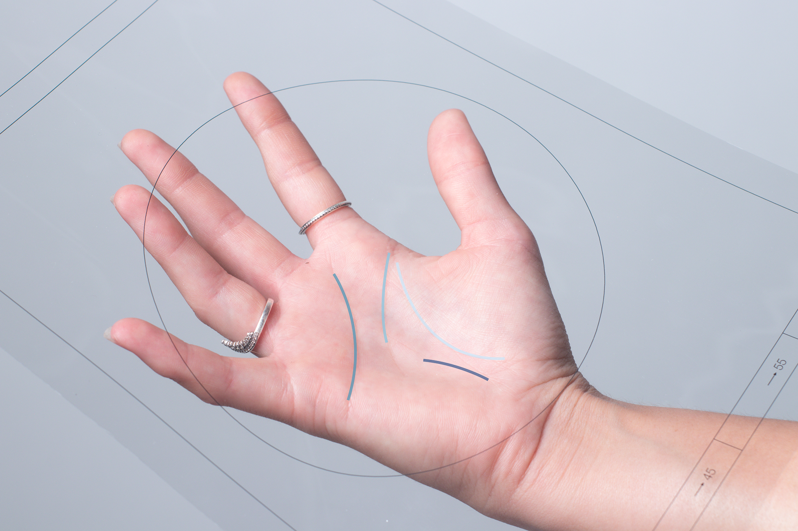

<!DOCTYPE html>
<html lang="en">

<head>
  <meta charset="utf-8" />
  <meta name="viewport" content="width=device-width, initial-scale=1.0" />

  <title>Andrea Corsini - lineo</title>
  <link rel="icon" type="image/x-icon" href="assets/favicon.png" />

  <link rel="stylesheet" href="style2.css" />
</head>

</html>

<body>
  <!------------------------------------PUNTATORE MOUSE------------------------------------->
  <div id="pointer" class="normal"></div>

  <!------------------------------------SCROLL------------------------------------->
  <div class="progress-container">
    <div class="progress-bar" id="myBar"></div>
  </div>

  <!------------------------------------NAVBAR------------------------------------->
  <div id="navbar">
    <a>andreacorsini.it</a>
    <a>-</a>
    <a href="" style="height: 100%;"></a>
    <a>-</a>
    <a>portfolio 2024</a>
  </div>

  <a id="works" href="index.html" style="color: white; text-decoration: none;">back</a>
  <div id="cerchiomouse1" onclick="location.href='index.html';"></div>

  <!------------------------------------HOMEPAGE------------------------------------->
  <div id="homepage">
    <a id="titoloneprj"><span
        style="position: absolute; transform: translateX(43vw); color: deeppink; overflow: hidden;"><span
          id="hometextanim1">LINEO</span></span><br>
      <span
        style="font-family: Arial, Helvetica, sans-serif; font-size: 6.3vw; position: absolute; transform: translateX(33vw); overflow: hidden;"><span
          id="hometextanim2">CHIROLAB
        </span></span></a>
  </div>

  <div id="totale">
    <div id="immagini">
      <div style="overflow: scroll">
        <div style="padding:56.25% 0 0 0;position:relative;"><iframe
            src="https://player.vimeo.com/video/746295404?h=62e9c78a42&loop=1&byline=0&portrait=0"
            style="position:absolute;top:0;left:0;width:100%;height:100%;" frameborder="0"
            allow="autoplay; fullscreen; picture-in-picture" allowfullscreen></iframe></div>
        <script src="https://player.vimeo.com/api/player.js"></script>
        
        
        
        
        
        
        
      </div>
    </div>
    <div id="testi">
      <div id="testo">
        Lineo is a speculative design project that leads the user to think about
        how superstition affects us and how the mechanisms linked to popular
        beliefs are linked to our lifestyle choices.<br />
        The project starts from the practice of palmistry, the art of palm
        reading, imagining a surgical clinic that allows you to reconfigure your
        lines through an operation.<br />
        The project therefore develops in the branding of a clinic, named Chirolab, which
        incorporates the stylistic features of medical cleaning but also
        recalling the mystical sphere, and in the construction of a prototype
        that "reads" the lines of the hand and, linked to the website of the
        fictional clinic, allows to reconfigure own hand resulting in a report
        explaining the whole process to the user.
        <br />
        <br /><br />
        <span id="collab">
          in collaboration with:<br />
          Dorotea Anfossi<br />
          Michela Brambilla<br />
          Simone Cerea<br />
          Alessandro Pedriali
        </span>
      </div>
    </div>
  </div>

  <script src="https://cdn.jsdelivr.net/npm/gsap@3.12.5/dist/gsap.min.js"></script>
  <script src="https://unpkg.com/split-type"></script>
  <script src="animationsprj.js"></script>
  <script src="https://cdn.jsdelivr.net/npm/locomotive-scroll@beta/bundled/locomotive-scroll.min.js"></script>
  <script>
    (function () {
      const locomotiveScroll = new LocomotiveScroll();
    })();
  </script>
</body>